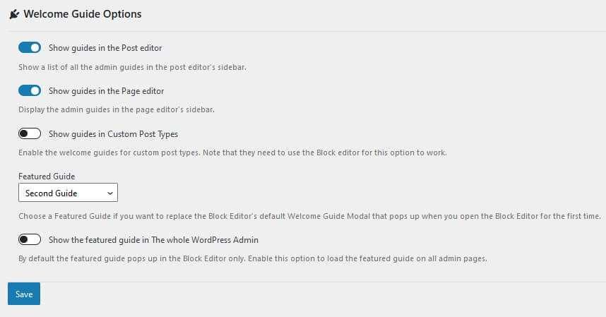

Add a Custom Welcome Guide in the WordPress Admin (With and Without a Plugin)
In the WordPress admin, when you edit a post or page for the first time, a guided tour pops up and introduces the user to the Gutenberg editor. Traditionally, WordPress was using a visual editor (also known as the Classic Editor to create posts and pages without the need to write custom html. Since version 5.0, the Gutenberg plugin has been integrated into the WordPress core, replacing the old editor. In this way, the Gutenberg editor became the official WordPress editor. It is also known as the Block editor because it consists of reusable components, called blocks. The idea behind the new editor is to provide first-class user experience by making things way easier and more intuitive than what it was before.
The WordPress Block Editor is built in React.js and utilizes reusable components, referred to as Gutenberg Components. One of the components in this list is the Guide component. It was introduced in WordPress 5.4 and updated in version 5.5. It represents a dismissable collection of messages and tips that pops up when the user opens the Block Editor for the first time:
The default welcome guide is looking quite good and it would be nice if there was an easy way to modify these messages and create our own. In this way, if you need to collaborate with other admin users, you can provide an easy and interactive way to showcase what they can do in the WordPress admin. In this tutorial, I will provide two ways how to edit the guide or create a new one - with and without a plugin.
Adding a Welcome Guide with a plugin.
From the WordPress admin, go to plugins => add new and search for the Custom Welcome Guide plugin. Install and activate the plugin, then go Guides => add new and add a Guide.
Adding the Guides
If you want to add more screens to the guide (sub-guides), just add a new guide and assign it to a parent guide via the Page attributes tab in the Block Editor’s sidebar.
Displaying the Guides
In this way, you can add as many guides as you want and add as many steps (sub-guides) to each guide as you want. Simple as that. Now, when you edit a post or page, you will see a list with all the parent guides that you have created in the Block Editor’s sidebar:
By clicking on any of the guides that you have created, you will be able to see the guides in action. This is great, but what if we want to show a guide that we have created when the user opens the editor for the first time? No worries, we have got you covered. Read on to find out how to do it.
Customizing the Default Welcome Message
To create a dismissable custom welcome guide that will popup when the user loads the Block Editor for the first time, you just need to go to the pugin’s settings page (Guides => Settings) and select a featured guide. Now, when you open a post or page, you will see that the featured custom guide will automatically popup. The users will still be able to see all the other guides from the guides’ list in the Block Editor’s sidebar.
Additional Options
You can also choose to show the guides for a particular post type and hide it on others. If you wish, you can also display a guide that will pop up on all admin pages (not just inside the Block editor). This is how the plugin’s settings page looks like:

Adding a Welcome Guide Without a plugin.
Here, it gets more fun. This section is for the most tech-savvy users. For most use cases, the above method with the plugin should be more than enough. However, in some situations, you might want to customize things beyond the existing options or you just want to learn something new and dive deeper into react.js. Some understanding of react.js is required for this example, since the Guide component is built on top of react and we will be using ESNext and JSX here.
WordPress core is becoming more and more react and less php these days. If you examine the Block Editor Handbook, you will be surprised to see how many traditional elements such as icons, buttons, modals and so on are all boiled down now to ready-to-use Gutenberg components. You are not obliged to use react or ESNext to develop for the Block editor but in order to get the latest coding experience, I would strongly encourage you to do so. So, lets get started and create our own custom plugin.
Create Your Own Plugin.
First, you need to scaffold your own plugin. Let’s not do it the old school way and use npm (make sure you have node installed first). In this way, we can take full advantage of the latest ESNext and JSX syntax (the proposed process requires a build step too) and let WordPress configure it all for us. We will use the Create Block package, which is the official way to develop for the Gutenberg editor. Please note that we will be customizing a Gutenberg component and not creating our own custom block. However, currently this appears to be the recommended way of creating a plugin for the Block Editor.
In the command line, run the following command npx @wordpress/create-block my-welcome-guide. This will auto-generate a plugin for you that adds a custom gutenberg block. Now run npm start to enable the development environment. This command lets you add ESNext and JSX code to the src folder and automatically transpiles down all the assets to vanilla javascript that all the browsers can understand. The transpiled code is located in the build folder, you are not supposed to touch anything there. Finally, when you finish building your plugin, you should use npm run build. This will minify all the assets located in the build folder. Do not forget that you may need to enqueue the assets in the build folder, in order to see the changes. After you have successfully set up the environment and make sure that the code inside the src/index.js folder gets compiled to css and js in the build folder, you can clean up some of the code, which you will not be needing for this example, like registering a block. After you have set everything up, you can go ahead with this tutorial.
Add Document Settings Panel
Since WordPress 5.4, we can use a component call PluginDocumentSettingPanel to add elements to the Block Editor’s sidebar. So, what is the plan?
First, let’s create a custom Button component with the guide’s title inside the Block editor’s sidebar. We will build this one on top of the Button component for the Gutenberg Editor. When the user clicks on it, we will call another custom component called Welcome Guide. This component will be built on top of the Guide component for the Block editor. FInally, we will add a custom panel with the custom button component inside the Block Editor’s sidebar.
in the src folder, create a file called button.js and add the following code inside it:
import { useState } from '@wordpress/element';
import { Button } from '@wordpress/components';
import WelcomeGuide from './guide';
const { __ } = wp.i18n;
const WelcomeGuideButton = (props) => {
const [isOpen, setOpen] = useState(false);
return (
<>
<Button onClick={() => setOpen(true)}>
{__('Welcome Guide: “Teach the Editorial Team How To Code”')}
</Button>
{isOpen && (
<WelcomeGuide
{...props}
onFinish={() => setOpen(false)}
/>
)}
</>
);
};
export default WelcomeGuideButton;
Here, we have modified the default Button component and created our own that will toggle the Custom Welcome guide component that we are yet to build.
Now, lets bild the custom guide component. In the src folder add another file called guide.js and paste the following code:
import { __ } from '@wordpress/i18n';
import { Guide} from '@wordpress/components';
const WelcomeGuide = ( props ) => {
return (
<Guide { ...props } pages={ [
{
image: <img src="https://s.w.org/images/block-editor/welcome-canvas.gif" />,
content: (
<div>
<h2 className="edit-post-welcome-guide__heading">{__('Welcome to the block editor')}</h2>,
<p className="edit-post-welcome-guide__text">{__('In the WordPress editor, each paragraph, image, or video is presented as a distinct “block” of content.')}</p>
</div>
)
},
{
image: <img src="https://s.w.org/images/block-editor/welcome-editor.gif" />,
content: (
<div>
<h2 className="edit-post-welcome-guide__heading">{__('Make each block your own')}</h2>
<p className="edit-post-welcome-guide__text">
{__(
'Each block comes with its own set of controls for changing things like color, width, and alignment. These will show and hide automatically when you have a block selected.'
)}
</p>
</div>
),
},
{
image: <img src="https://s.w.org/images/block-editor/welcome-library.gif" />,
content: (
<div>
<h2 className="edit-post-welcome-guide__heading">{__('Get to know the block library')}</h2>
<p className="edit-post-welcome-guide__text">
{__( 'All of the blocks available to you live in the block library.')}
</p>
</div>
),
},
] }
>
</Guide>
)
}
export default WelcomeGuide;
Putting it all Together
We have created our own custom components, but we still do not display them anywhere. Let’s change that and add them as an additional panel to the Block editor’s sidebar:
Add the following code in the src/index.js:
/**
* Internal dependencies
*/
import WelcomeGuideButton from './button';
/**
* add localization support
*/
const { __ } = wp.i18n;
const { registerPlugin } = wp.plugins;
/**
* Register the Welcome Guide in the Gutenberg document sidebar
* @link https://developer.wordpress.org/block-editor/reference-guides/slotfills/plugin-document-setting-panel/
*/
const { PluginDocumentSettingPanel } = wp.editPost;
const WelcomeGuidePluginDocumentSettingPanel = () => (
<PluginDocumentSettingPanel
name="welcome-guide"
title="Welcome Guide"
className="welcome-guide"
>
<WelcomeGuideButton></WelcomeGuideButton>
</PluginDocumentSettingPanel>
);
registerPlugin( 'welcome-guide-plugin-document-setting-panel', {
render: WelcomeGuidePluginDocumentSettingPanel,
icon: 'welcome-view-site'
})
Now, as you can see, we have added all the text from the default Welcome message into our new modified component called Welcome Guide. Just modify the text inside the pages attribute in guide.js and you should be good to go with creating your own custom plugin for the WordPress block editor! Happy coding!